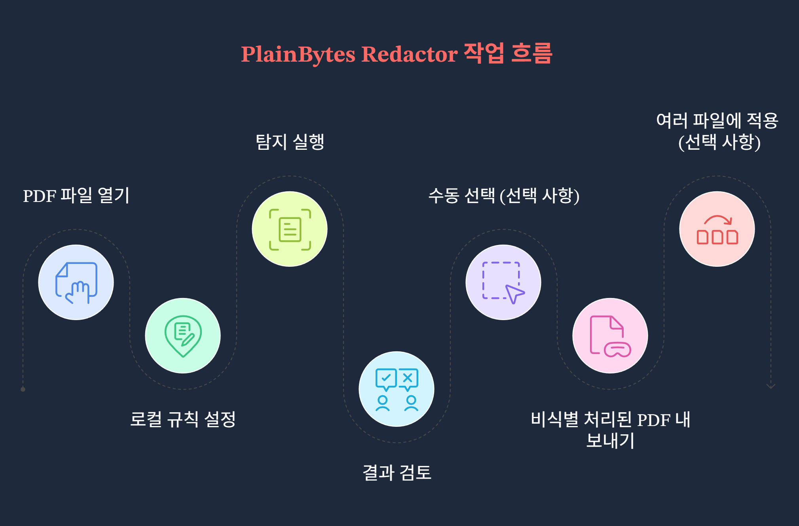
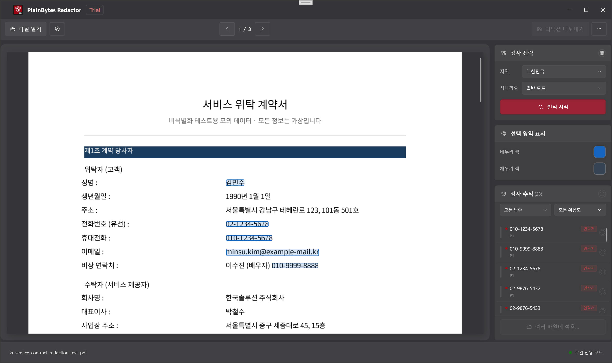

현재 Windows 데스크톱 앱 기준으로 작성되었습니다. 설치된 버전과 내용이 다를 경우 앱 안의 화면을 기준으로 삼으세요.
1. 이 앱의 용도
1.1 실제 삭제 방식 vs 화면상 가리기
이 두 방식은 규정 준수와 보안 측면에서 의미가 크게 다릅니다.
항목
화면상 가리기(일반적인 “검은 막대”)
실제 삭제 방식(이 앱의 목표)
PDF 내부
텍스트, 벡터 또는 이미지 객체가 파일 안에 그대로 남아 있고, 다른 그래픽으로 덮여 있을 뿐일 수 있습니다.
일치하는 콘텐츠를 콘텐츠 스트림에서 제거하여 일반적인 분석 경로로 복구할 수 없도록 합니다.
복사 / 검색
도구에 따라 “숨겨진” 텍스트가 여전히 복사될 수 있습니다.
선택 가능한 텍스트에 민감한 문자열이 더 이상 남지 않도록 하는 것이 목표입니다. 내보낸 파일에서 직접 확인하세요.
적합한 용도
화면에서 읽거나 임시로 가리는 용도.
외부 공유, 보관, 감사, 실사 등 콘텐츠를 완전히 제거해야 하는 경우.
PlainBytes Redactor는 실제 삭제 방식을 중심으로 설계되었습니다. 내보내기 때 실제로 제거할 영역을 명확히 하려면 확인을 사용하세요.
1.2 “로컬 및 오프라인”의 의미
작업은 이 PC 안에서 처리됩니다: PDF 열기, 규칙 매칭, 삭제된 파일 쓰기, 검증이 모두 로컬에서 실행됩니다.
삭제 처리를 위해 문서를 업로드하지 않습니다: 이 제품은 삭제 처리 과정에서 파일을 클라우드로 보내도록 설계되어 있지 않습니다.
도움말/업데이트와는 별개입니다: 도움말, 업데이트 확인 같은 메뉴를 열면 Windows가 브라우저나 Microsoft Store를 실행할 수 있습니다. 이는 삭제 처리 경로를 오프라인으로 유지하는 것과는 별개의 동작입니다.
1.3 적합한 사용 상황
법무, 금융, 의료, 공공, 감사 등에서 사람의 검토와 유출 범위 최소화가 필요한 작업 흐름.
PDF를 제공해야 하지만 신분증 번호, 계좌번호, 연락처 등 식별 가능한 정보를 제거해야 하는 경우.
같은 레이아웃의 PDF가 여러 개 있는 경우: 하나의 “샘플” 파일에서 확인한 뒤 여러 파일에 적용으로 같은 위치 기준을 나머지 파일에 재사용할 수 있습니다(§3의 단계 G 및 §9 참고).
2. 핵심 개념
2.1 삭제 표시 (RedactionMark)
내부적으로 삭제 후보 영역은 각각 삭제 표시입니다. “페이지 위의 사각형 + 메타데이터”라고 생각하면 됩니다.
페이지와 사각형: PDF 좌표계에서의 위치와 크기입니다.
상태: 대기 중 또는 확인됨. 내보낼 때는 확인된 표시만 제거됩니다.
출처: 규칙(패턴/정규식) 또는 수동 선택입니다. 자동으로 찾은 항목과 직접 그린 항목을 구분할 수 있습니다.
범주와 위험도: 감사 목록에서 필터링, 정렬, 일괄 작업에 사용됩니다.
2.2 “확인”의 의미와 수동 확인이 필요한 이유
자동화가 최종 판단은 아닙니다: 규칙 매칭은 정상 텍스트를 과하게 표시하거나 실제 민감 정보를 놓칠 수 있습니다. 따라서 앱은 “찾은 것은 모두 삭제해야 한다”고 가정하지 않습니다.
확인 = 검토 후 승인: 확인된 표시는 내보내기 대상에 포함됩니다. 대기 중으로 남은 항목은 최종 삭제 범위로 처리되지 않습니다.
실제 검토 절차에 맞습니다: 이 추가 단계는 2인 검토, 감사 추적, 실수로 한 페이지 전체를 한 번에 지우는 일을 방지하는 흐름과 맞닿아 있습니다.
2.3 일괄 처리 기준
“이것을 이름 있는 템플릿 파일로 저장했다가 나중에 선택”하는 흐름은 없습니다. 일괄 처리가 사용하는 것은 메모리상의 기하학적 기준입니다. 여러 파일에 적용을 통해 일괄 처리로 들어가면, 앱은 현재 문서의 모든 확인된 표시를 정규화된 사각형(페이지 + 페이지 크기 기준 상대 좌표)으로 변환하며, 이는 해당 일괄 세션에서만 사용됩니다.
대기열의 각 PDF에 대해 일괄 엔진은 해당 사각형만 적용합니다. 파일마다 문서 전체 규칙 탐지를 새로 실행하지 않습니다.
적합한 경우: 같은 시스템에서 나온 여러 PDF가 같은 레이아웃과 같은 위치의 민감 영역을 가질 때입니다(예: 동일한 형식의 명세서). 레이아웃이 조금이라도 달라지면 박스가 잘못된 위치에 놓일 수 있으므로 초기 결과를 표본 확인하세요.
규칙 센터의 규칙: 현재 단일 파일 작업 흐름에서 항목을 찾는 데 도움을 줍니다. 대기열의 모든 파일에 자동으로 다시 실행되지는 않습니다. 일괄 처리는 이미 확정한 확인된 위치를 기준으로 동작합니다.
3. 전체 작업 흐름
예시 상황
이 예시에서는 법무 담당자가 외부에 제공할 8페이지짜리 직원 퇴사 관련 PDF를 처리합니다. 휴대폰 번호, 은행카드 일부 번호, 개인 이메일 주소를 제거해야 합니다. 이 파일은 텍스트 선택이 가능한 실제 전자 PDF이며, 단순 스캔 이미지가 아닙니다.

작업 흐름 개요
단계 A: 문서 열기
열기 또는 끌어다 놓기로 PDF를 불러옵니다. 일반적인 이미지 형식도 지원하지만, 앱 내 처리 경로는 다를 수 있습니다.
미리 보기, 탐지, 표시 등 모든 작업은 이 원본 파일 하나에 연결되므로 실제로 처리하려는 버전을 열어야 합니다.
단계 B: 규칙 센터에서 지역과 시나리오 선택
규칙을 열고 지역(국가/영역)을 선택한 뒤 업무 시나리오(일반, 금융 등)를 선택합니다. 필요하면 기본 제공 규칙을 켜거나 끄고, 사용자 지정 규칙을 추가합니다.
실제 적용되는 규칙 집합은 지역과 시나리오에 따라 달라집니다. 잘못된 시나리오를 고르면 필요한 규칙이 꺼져 있거나 오탐이 늘 수 있습니다. 닫기 전에 기본 설정을 저장하면 다음 유사 문서를 더 빠르게 처리할 수 있습니다.
단계 C: 탐지 실행
오른쪽의 스캔 정책 영역에서 탐지 시작(또는 같은 기능의 컨트롤)을 클릭하고 문서 모델 구성과 전체 탐지가 끝날 때까지 기다립니다.
그러면 규칙 탐지 결과가 대기 중 표시 목록으로 바뀝니다. 지역, 시나리오 또는 규칙을 바꿨다면 목록이 맞도록 탐지를 다시 실행하세요.
단계 D: 감사 목록에서 검토
오른쪽 감사 추적에서 항목을 하나씩 확인하거나 필터를 사용합니다. 제거해야 하는 항목은 확인하고, 오탐은 확인을 해제하거나 행을 제거합니다(정확한 컨트롤은 버전에 따라 다릅니다). 미리 보기의 노란색 오버레이는 보통 목록과 동기화되며, 클릭하면 확인 상태를 전환할 수 있습니다.
이 단계는 잘못된 내용을 삭제하거나 필요한 항목을 놓치는 일을 막아 줍니다. 내보내기는 확인된 표시만 반영합니다.
단계 E: 누락된 항목 직접 박스 지정
왼쪽 미리 보기에서 규칙이 찾지 못했지만 삭제해야 한다고 알고 있는 내용 위에 사각형을 드래그합니다. 배경이 복잡하면 선택 색상을 조정해도 됩니다.
자동 탐지는 모든 것을 잡아내지 못합니다. 수동 박스가 마지막 안전망입니다.
단계 F: 내보내기
삭제 처리된 파일 내보내기를 선택하고 저장 위치를 지정한 뒤 완료 요약(제거된 항목 수, 메타데이터 정리, 검증 메시지)을 확인합니다.
공유 가능한 복사본이 만들어집니다. 요약은 빠른 점검용이며, 경고가 있으면 내보낸 PDF를 열어 표본 확인하세요.
단계 G(선택): 여러 파일에 적용
이 PDF에서 삭제해야 할 항목이 모두 확인되면 여러 파일에 적용(또는 같은 기능의 항목)을 사용합니다. 앱은 위에서 설명한 정규화된 기준을 만들고 일괄 삭제 처리를 엽니다. 같은 레이아웃의 PDF를 더 추가하고, 출력 폴더를 지정하고, 메타데이터 제거 여부를 선택한 뒤 실행합니다.
레이아웃이 실제로 일치한다면 파일마다 같은 확인 작업을 반복하지 않아도 됩니다. 일괄 처리도 박스 영역을 물리적으로 제거합니다. 중요: 이는 디스크에 저장되는 재사용 가능한 이름 있는 템플릿이 아닙니다. 별도 템플릿 파일은 없습니다. 기준은 이 확인된 문서에서 나옵니다. 또한 일괄 처리는 대기열의 각 파일에 대해 규칙 탐지를 다시 실행하지 않습니다. 어떤 파일의 레이아웃이 달라졌다면 단일 파일 흐름으로 돌아가세요.
4. 기본 화면 둘러보기

기본 화면
4.1 미리 보기(왼쪽)
용도: PDF(또는 이미지)의 각 페이지를 표시하여 페이지 번호와 레이아웃이 파일과 일치하도록 합니다.
표시: 자동 및 수동 대기 영역이 강조 표시됩니다. 영역을 클릭하면 목록과 함께 확인 상태가 전환되는 경우가 많습니다(노란색 표시는 버전에 따라 다릅니다).
분리된 이유: “언제 전체 문서를 스캔할지”와 “감사 목록을 어떻게 처리할지”를 구분하여 혼동을 줄입니다.
4.3 선택 영역 표시 방식
용도: 수동 선택 영역의 테두리, 채우기, 사용자 지정 색상 등을 조정하여 복잡한 배경에서도 박스가 잘 보이게 합니다.
참고: 이는 시각적 보조일 뿐입니다. 실제 삭제 여부는 확인 상태와 내보내기에 따라 결정됩니다.
4.4 감사 추적 목록
용도: 열린 문서의 민감 항목을 모아 보여 주며, 범주와 위험도 필터, 행별 또는 일괄 확인/해제 작업을 제공합니다.
미리 보기와 동기화: 행을 선택하거나 조작하면 보통 해당 페이지로 이동하거나 강조 표시됩니다. 미리 보기의 표시를 클릭하면 목록 상태도 갱신됩니다.
4.5 도구 모음(위에서 아래 순서)
열기: 로컬 PDF 또는 지원되는 이미지를 선택합니다.
문서 닫기: 현재 파일을 닫습니다.
이전 / 다음 페이지: 도구 모음을 사용하세요. 단일 파일 페이지의 Page Up / Page Down은 미리 보기 스크롤용으로 별도 처리됩니다(§7.3 참고).
규칙: 규칙 센터를 엽니다.
일괄: 일괄 삭제 처리를 엽니다.
삭제 처리된 파일 내보내기: 확인된 표시가 있을 때 사용할 수 있습니다.
더 보기(⋯): 언어, 도움말, 피드백, 업데이트, 정보 등.
상태 표시줄에는 준비 상태와 현재 파일 이름이 표시됩니다.
5. 규칙 센터
5.1 지역 및 업무 시나리오
지역: 국가/영역 기준이며, 적용되는 기본 제공 패턴(신분증 형식, 전화번호 규칙 등)을 결정합니다.
업무 시나리오: 일반, 금융, 의료, 법률/정부 등 규칙 묶음을 좁히거나 강조하여 기본값이 문서 유형에 맞게 합니다.
함께 사용: 먼저 지역을 정하고 시나리오를 선택하세요. 변경 후에는 탐지를 다시 실행해야 하며, 그렇지 않으면 이전 결과를 보고 있을 수 있습니다.
5.2 기본 제공 규칙 vs 사용자 지정 규칙
기본 제공: 앱에 포함되어 있으며 신원, 금융, 주소, 연락처 등으로 묶여 있습니다. 규칙별로 켜고 끌 수 있고, 로컬 데이터 기반이라 완전히 오프라인으로 사용할 수 있습니다.
사용자 지정: 표시 이름과 패턴을 직접 지정합니다. 일반 부분 문자열(대소문자 구분 없음) 또는 .NET 정규식을 사용할 수 있습니다. 기본 제공 규칙이 모르는 내부 코드에 유용하며, 추가 가능한 개수에는 제한이 있을 수 있습니다.
5.3 규칙을 조정해야 할 때
노이즈가 너무 많을 때: 지나치게 넓은 규칙을 잠시 끄거나 더 적합한 시나리오를 선택합니다.
같은 패턴이 반복되지만 기본 규칙이 잡지 못할 때: 사용자 지정 규칙을 추가하여 수동 박스 작업을 줄입니다.
설정이 어긋났을 때: 기본값 복원으로 로컬 변경 사항을 지울 수 있습니다(확인 절차가 있습니다).
6. 감사 사이드바
6.1 확인 방식이 이렇게 설계된 이유
한 행은 여러 페이지에 나타나는 같은 민감 유형 또는 같은 키의 여러 발생을 묶는 경우가 많습니다. 이를 확인한다는 것은 해당 위치들이 모두 제거되어야 한다고 승인하는 뜻입니다.
대기 중 상태는 “모델의 추정”과 “사람의 결정”을 분리하여, 검토 없이 일괄로 기록되는 일을 막습니다.
내보내기 엔진은 설계상 확인된 표시만 사용합니다.
6.2 필터와 일괄 확인
필터: 범주나 위험도로 좁혀 고위험 항목 또는 특정 필드 유형(예: 연락처만)을 먼저 처리합니다.
일괄: 현재 필터에 보이는 모든 항목의 확인 상태를 한 번에 전환합니다(문구는 버전에 따라 다름). 한 그룹이 전부 맞거나 전부 오탐일 때 유용합니다.
팁: 일괄 작업 전 활성 필터를 확인하여 의도하지 않은 행까지 포함하지 않도록 하세요.
6.3 위험 수준
위험 수준(예: 심각, 높음, 의심, 중간, 낮음)은 정렬과 필터링에 사용되어 가장 위험한 항목을 먼저 볼 수 있게 합니다. 이것이 곧 확인해야 한다는 뜻은 아니며, 무엇을 삭제할지는 사용자가 결정합니다.
7. 수동 선택
7.1 직접 박스를 그려야 할 때
규칙이 놓친 내용이지만 업무상 반드시 제거해야 하는 경우입니다. 예: 사진 속 손글씨 주석, 특이한 레이아웃 영역 등.
탐지 결과가 조각나 있거나위치가 맞지 않을 때는 잘못된 자동 항목을 제거하고 더 정확한 박스를 그립니다.
이미지로 처리되는 스캔 전용 콘텐츠는 텍스트 PDF와 동작이 다릅니다. 이 경우 수동 박스에 더 의존하게 됩니다(FAQ 참고).
7.2 자동 탐지 표시와 함께 작업하기
권장 순서: 탐지 실행 → 감사 목록에서 명백한 오탐을 정리하고 패턴 확인 → 실제 누락 항목에 수동 박스 추가 → 미리 보기를 페이지별로 빠르게 확인. 수동 표시와 자동 표시는 내보내기 때 동일하게 처리되며, 중요한 것은 확인 여부입니다.
7.3 키보드 단축키(미리 보기 및 표시)
단일 파일 페이지가 로드되어 있을 때 주 창에 PreviewKeyDown이 등록됩니다. 아래 단축키는 문서가 열려 있고 앱이 작업 중이 아닐 때만 동작합니다. 도구 모음의 이전/다음 페이지 버튼과는 직접 연결되어 있지 않습니다.
키
동작
Tab
다음 삭제 표시로 이동합니다.
Shift + Tab
이전 삭제 표시로 이동합니다.
←↑→↓
수정 키가 없을 때: ←↑는 이전 표시, →↓는 다음 표시로 이동합니다. 수정 키가 눌린 상태에서는 ↑↓만 고정 간격으로 미리 보기를 스크롤하며, ←→는 이 분기에서 처리되지 않습니다.
Enter
수정 키가 없을 때: 선택한 표시의 확인 상태를 전환합니다.
Delete
수정 키가 없을 때: 선택한 표시를 제거합니다.
Page Up / Page Down
미리 보기 영역을 대략 한 화면 높이만큼 스크롤합니다.
Home / End
미리 보기의 맨 위 / 맨 아래로 이동합니다.
8. 내보내기
8.1 내보내기 전 점검 목록
이 파일이 실제로 제공하려는 파일인지 확인합니다(페이지 수, 첨부 페이지 등).
삭제해야 하는 모든 항목이 확인되었고, 남겨야 하는 항목은 확인 해제 또는 목록에서 제거되었습니다.
스캔 페이지나 특수 영역을 포함해 주요 페이지를 미리 보기에서 눈으로 확인했습니다.
내보내기는 일반적으로 원본을 덮어쓰지 않고 새 파일(또는 선택한 경로)을 만든다는 점을 이해했습니다. 실제 동작은 저장 대화상자를 따릅니다.
8.2 메타데이터 제거가 필요한 이유
PDF에는 본문 외에도 작성자, 생성 프로그램, 타임스탬프, XMP 등 다양한 메타데이터가 포함될 수 있습니다. 본문만 삭제하고 메타데이터를 남기면 내부 계정이나 편집 이력이 노출될 수 있습니다. 이 앱은 내보내기 때(일괄 처리에서도 선택적으로) 이러한 정보를 정리할 수 있습니다. 외부로 나가는 문서라면 UI에서 제공될 때 메타데이터 정리 옵션을 켜 두는 것이 보통 좋습니다.
8.3 요약 확인 방법
물리적으로 제거된 항목 수가 예상과 맞아 보이나요?
메타데이터가 정리되었다는 안내가 있나요?
텍스트 검증 경고가 보이면 자동 샘플링에서 의심 지점을 찾은 것입니다. 내보낸 PDF를 열어 확인하세요. 요약만으로 잔여 내용이 전혀 없다고 단정하지 마세요.
9. 일괄 처리
9.1 일괄 모드가 실제로 하는 일
기준을 가지고 여러 파일에 적용으로 들어가면, 대기열의 각 PDF는 위치 적용 전용 경로를 따릅니다. 정규화된 사각형이 각 페이지의 절대 좌표로 변환되고, 표시가 생성되며, 콘텐츠가 물리적으로 제거되고, 선택적으로 메타데이터가 정리됩니다. 파일마다 규칙 탐지를 다시 실행하지는 않습니다.
즉, 단일 파일 모드에서 사용한 규칙은 샘플에서 항목을 찾고확인하는 데 도움을 준 것입니다. 일괄 처리는 같은 기하 구조를 가진 다른 파일에 확인한 위치를 복사할 뿐입니다.
9.2 적합한 사용 사례
같은 시스템에서 나온 많은 PDF가 같은 레이아웃이고 민감 영역이 같은 상대 위치에 있는 경우.
하나의 예시 파일에서 탐지와 확인을 마쳤고, 거의 동일한 복사본들에서 같은 작업을 반복하고 싶지 않은 경우.
9.3 주의할 점
저장되는 템플릿 파일 없음: 일괄 창을 닫으면 메모리상의 기준도 사라집니다. 다음번에는 여러 파일에 적용에서 다시 기준을 만들어야 합니다.
그 경로 없이 도구 모음에서 일괄을 바로 열면 기준이 없을 수 있으며, 시작 버튼이 비활성 상태로 남을 수 있습니다.
작은 레이아웃 차이도 누락이나 잘못된 영역 삭제로 이어질 수 있습니다. 첫 결과는 표본 확인하세요.
외부 공유용이라면 제공되는 경우 속성 및 숨겨진 데이터 지우기를 켜는 것이 좋습니다.
일부 문서 유형이나 라이선스 등급에서는 일괄 처리가 제한될 수 있습니다. 여러 파일에 적용이 비활성화되어 있다면 그 신호입니다.
10. 자주 묻는 질문
10.1 오탐이 많은 이유는 무엇인가요?
규칙 매칭은 휴리스틱에 의존합니다. 민감해 보이는 문자열, 사람 이름과 겹치는 지명, 표의 숫자 조각 등이 표시될 수 있습니다. 시나리오/규칙 조정, 잡음이 많은 규칙 끄기, 목록에서 확인 해제를 통해 보통 제어할 수 있습니다. 수동 확인은 의도된 설계로, 필요한 내용을 한 번의 클릭으로 삭제할 가능성을 낮춥니다.
10.2 스캔 PDF는 어떻게 하나요?
PDF가 실제로는 텍스트 레이어가 없는 페이지 이미지라면 규칙 탐지가 활용할 정보가 줄어듭니다. 이 경우 수동 박스나 해당 버전에서 제공하는 래스터 전용 흐름에 더 의존하게 됩니다(화면 안내를 따르세요). 처음부터 전자 PDF인지 스캔인지 확인해 두면 좋습니다.
10.3 이미지를 삭제 처리할 수 있나요? 사진 속 텍스트가 인식되지 않는 이유는?
가능합니다. 일반적인 이미지 형식도 문서처럼 열 수 있으며, 미리 보기, 표시, 내보내기 흐름은 그대로 사용합니다. 설치 파일 크기와 실행 비용을 합리적으로 유지하기 위해 현재 버전에는 OCR이 포함되어 있지 않습니다. 사진 속 텍스트는 선택 가능한 텍스트가 되지 않으므로 규칙 기반 탐지는 거의 적용되지 않습니다. 민감 영역은 박스를 그려 처리하세요(키보드 단축키로 표시 간 이동 가능). “인식 후 매칭”이 필요하다면 먼저 다른 곳에서 OCR을 수행하거나 텍스트 레이어가 있는 PDF를 제공하세요.
10.4 내보낸 파일을 빠르게 확인하려면?
PDF 리더에서 전체 선택 / 복사와 검색을 사용해 알려진 민감 문자열을 찾아보세요.
머리글, 바닥글, 각주를 눈으로 확인하세요.
앱의 내보내기 검증 요약을 확인하세요. 경고가 있으면 해당 페이지부터 다시 보세요.
매우 중요한 경우에는 조직의 기존 절차(두 번째 도구, 출력물 검토 등)를 추가로 적용하세요.